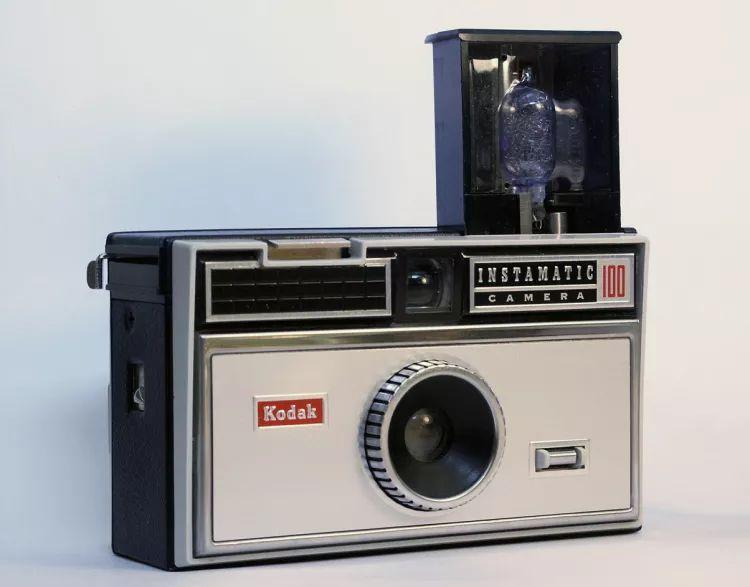
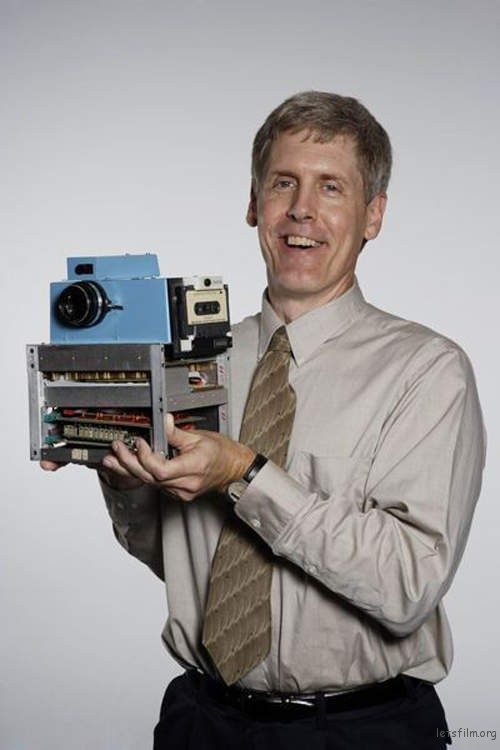
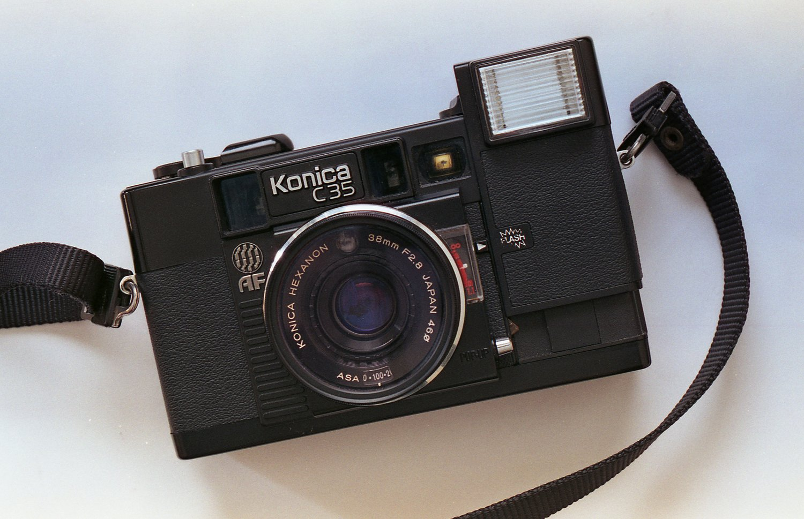
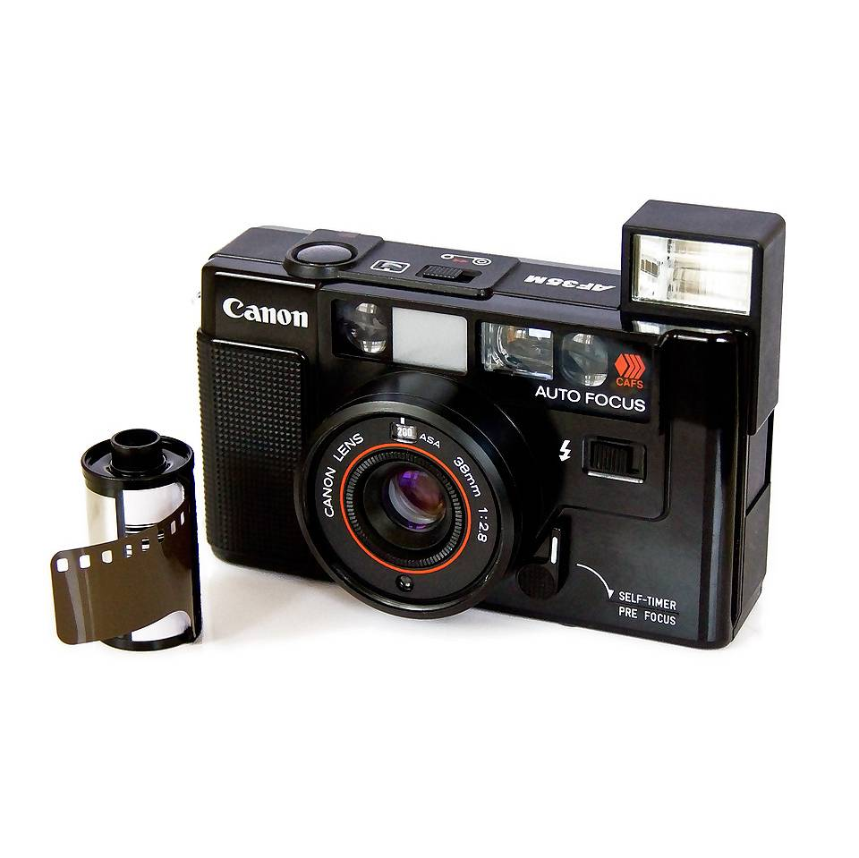
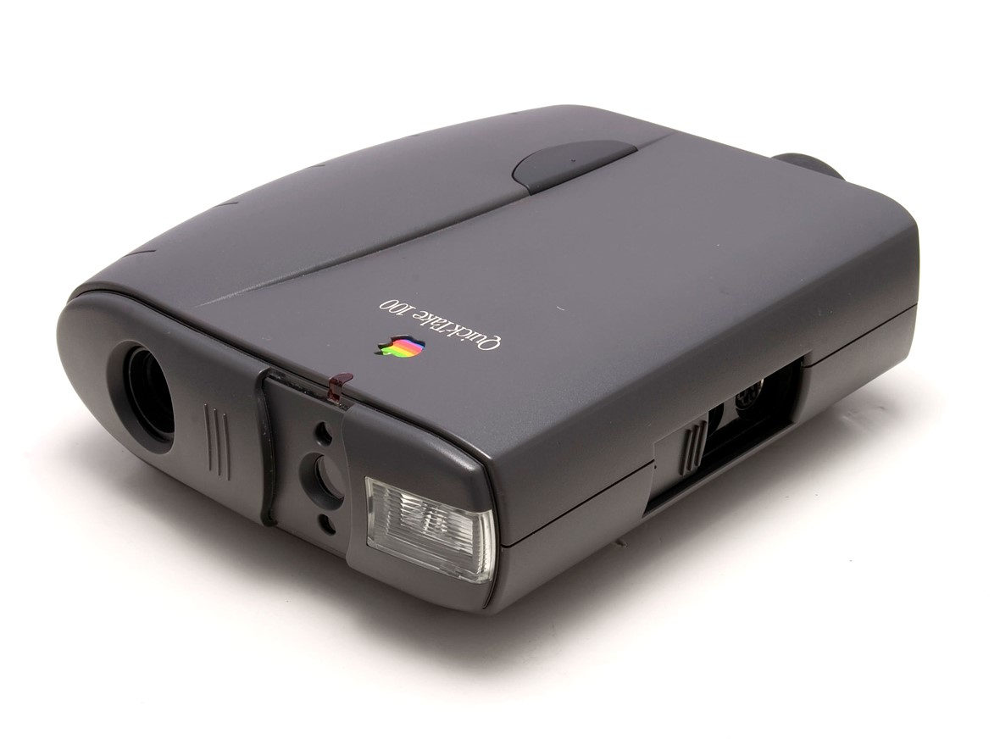

现代紧凑型相机发展
1. 胶卷时代：便携化开端（1920s-1960s）
1925年：徕卡Leica I（Ur-Leica）
徕卡Leica I首次使用35mm电影胶卷，体积比当时大画幅相机缩小80%，奠定现代便携相机基础，为后来纪实摄影的发展起到了巨大的作用，但早期仍属专业设备。

1963年：柯达Instamatic系列
柯达Instamatic系列使用126胶卷盒（Cartridge），实现“傻瓜式”装卷，至1970年售出5000万台，真正普及大众摄影。
2. 电子化革命：自动功能崛起（1970s-1990s）
1975年：数码相机诞生
1975 年，伊斯曼柯达的史蒂文·赛尚（Steven Sasson）基于 CCD 发明出了全球第一部数码相机。但因担心影响胶卷销量等原因，未能重视
1977年：柯尼卡C35 AF
柯尼卡C35 AF是全球首款量产自动对焦（AF）相机，对焦速度1.2秒，采用美国Honeywell模块，开启自动对焦时代。
1979年：佳能AF35M/Autoboy
佳能Autoboy创新性使用红外线自动对焦+马达过片，佳能声称他们的 Autoboy 是世界上第一台 35 毫米全自动紧凑型相机。
3. 数码化转型：传感器替代胶卷（1990s-2000s）
1994年：Apple QuickTake 100
Apple QuickTake 100是首款消费级数码相机（仅限Mac用户），分辨率640x480，但遗憾需连接电脑使用，未普及。
2000年：索尼Cyber-shot DSC-P1
索尼Cyber-shot DSC-P1是首款用Memory Stick的卡片机，厚度仅35mm，采用1/1.8英寸CCD传感器，奠定数码紧凑机形态。

4. 智能手机冲击与数码相机普及（2010s至今）
2010年：iPhone 4
iPhone 4加入500万像素+LED闪光灯，大众摄影转向手机。
 ZV-10 II
ZV-10 II
 Z fc (2021年发布)
Z fc (2021年发布)
 PowerShot G7 X Mark III
PowerShot G7 X Mark III
 PowerShot V1
PowerShot V1
 适马 fp系列
适马 fp系列
 理光 GR III
理光 GR III
 OM SYSTEM E-M10 Mark IV
OM SYSTEM E-M10 Mark IV